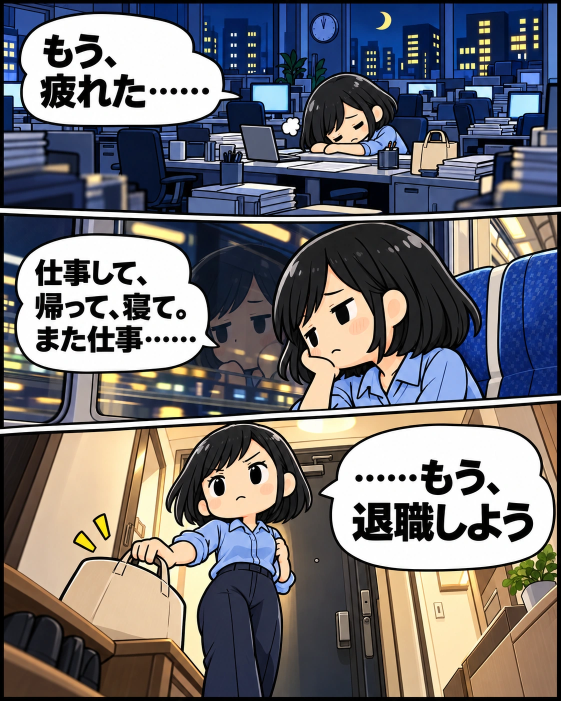

もう、退職しよう。でも生活費は？
左へスワイプで次へ
PR・フィクション。登場人物・会話・家計は創作です。
サービスと失業保険について漫画に出てきたサービス
よりみち給付金
サポートとは
退職前に、受給条件や手続きの進め方を相談できる民間サービスです。
「自分は対象？」「何をいつまでに用意する？」を、無料診断と個別相談で確認。契約後は、書類の準備や申請の進め方について支援を受けられます。
- 01
自分の条件を相談する
退職予定日や雇用保険の加入歴などを伝え、対象や流れを確認します。
- 02
必要な準備を整理する
必要書類と手順を整理し、何から進めるかを確認します。
- 03
本人の申請を支援する
申請の進め方を案内。申請は本人が行い、受給の判断は公的窓口が行います。
失業保険の基本
もらえる額は、
人によって違います。
一般に「失業保険」と呼ばれる基本手当は、離職後、働く意思と能力があり、求職活動をしている方の生活と再就職を支える雇用保険の給付です。
受給総額の目安
基本手当日額 × 給付日数
日額は離職前の賃金や年齢、給付日数は加入期間・年齢・離職理由などで変わります。一般の離職者の所定給付日数は90〜150日。区分によっては、より長い日数が設定されています。
退職する前に
まず、手元の条件を
確かめよう。
- 雇用保険の加入期間原則、離職前2年間に通算12か月以上。離職理由等による例外があります。
- 退職予定日・退職理由いつ辞めるか、どのような事情で辞めるかを整理しておきましょう。
- 離職前の給与・必要書類給与明細などを確認。離職票は通常、離職後に会社から交付されます。
病気やけがですぐに働けない場合は、基本手当をそのまま受け取れるとは限りません。受給期間の延長などをハローワークへご相談ください。
進め方は選べます
自分で進める。
準備を相談する。
公的窓口で相談し、自分で申請
ハローワークの案内をもとに、必要書類や日程を自分で確認して進める方法です。
民間サポートに準備を相談
条件や手順を整理する支援を受け、本人が申請する方法です。契約後の支援には費用がかかります。
よりみちは、「調べても分からない」「仕事と並行して準備したい」ときの相談先の一つ。支援内容と費用が自分に合うか、契約前に確認できます。
相談から契約まで
まずは無料で、
自分の場合を聞いてみる。
無料診断 → 個別相談 → 内容・費用を確認 → 利用するか判断。契約を決めるのは、無料診断と個別相談のあとです。
- 無料診断・個別相談
- 無料
- 契約後のサポート
一括支払い - 320,000円（税込）
- 契約後のサポート
分割支払い - 360,000円（税込）
2026年10月31日の公式掲載額。支払い方法によって手数料がかかる場合があります。支払総額・支援範囲・解約や返金の条件は、契約前にご確認ください。
漫画をテキストで読む
もう、退職しよう
夜の職場。『もう、疲れた……』。帰りの電車。『仕事して、帰って、寝て。また仕事……』。帰宅して決心する。『……もう、退職しよう』。
3か月分しかない
『でも、次の仕事が決まるまで、生活できるかな？』『貯金60万円。生活費は毎月20万円……』『収入がなくなったら、3か月分しかない……！』『どうしたらいいんだろう……辞めたあとにもらえるお金って、ないのかな』。
失業保険があるんだ
『退職後 生活費』で検索。『あ、失業保険っていうのがあるんだ……』。サポート案内で金額に気づく。『えっ、最大310万円!?』『……全員が同じ金額ってわけじゃないのね』『じゃあ、私の場合はいくら？どうやって申請するんだろう？』。
これを、仕事しながら……？
『雇用保険の加入期間……退職理由……離職票……？』『めっちゃやることある……何から始めればいいの？』『これ、仕事しながら全部調べるの……？』。休憩中、友達へ『ねえ、退職のことで、ちょっと相談していい？』。
わかる。私もサポートしてもらったよ
主人公「失業保険のこと調べてたら、わけわかんなくなって……」。友達「わかる。私も無理だからサポートしてもらったよ。」。主人公「え、そんなのあるんだ。」。友達「うん。でもここ、退職前の人が対象だから、早めに相談したほうがいいかも」。主人公「うん、わかった！」。
後日、送ってもらった案内を読む
後日、友達から送られてきた案内を読む。主人公「無料診断と個別相談で、自分の条件や流れを確認できるんだ」。想像のスタッフ「退職予定日や雇用保険の加入歴を伺って、必要書類と進め方を一緒に整理します」。主人公「何を、いつまでに用意するか分かれば、仕事しながらでも準備できそう」。
とりあえず一回、相談してみよう
主人公『でも、いきなり契約はちょっと不安……』。友達『まずは無料で聞いてみたら？頼むかどうかは、内容と費用を聞いてから決めればいいし』。主人公『よし。とりあえず一回、相談してみよう！』。よりみち給付金サポート。LINE無料診断の案内へ。無料診断・個別相談／契約後のサポートは有料。一括32万円・分割36万円（税込）。
このページは、よりみち給付金サポートを紹介する広告です。紹介先の利用等により運営者が報酬を受け取る場合があります。漫画の人物・会話は説明用のフィクションで、実際の利用者の体験や受給結果を示すものではありません。
掲載情報の確認日：2026年10月31日